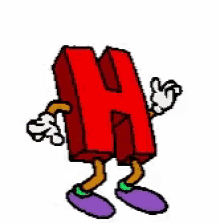
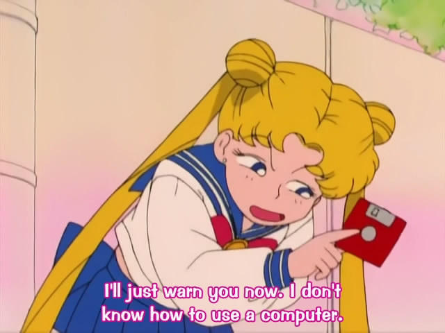
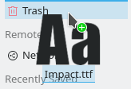
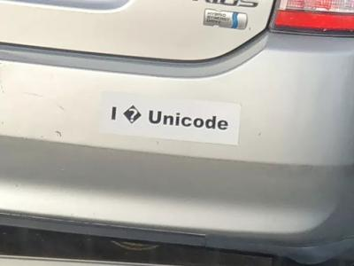
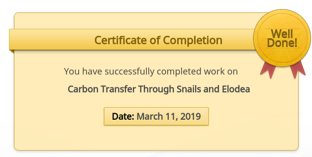
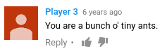

Blog Article: all about Me
Quality Pictures found in my Pictures folder and/or on the internet





The R e s p o n s e (s)
- Q: Do you have pets?
- A: I have two dogs and one of the swimmy ones.
- Q: What is your favorite class and why?
- A: Radio and Broadcasting because I get to be on the radio.
- Q: Do you have a nickname and how did you get it?
- A: I go by Carver, my middle name.
- Q: What is your favorite food?
- A: Mashed Potatoes
- Q: What do you want to be when you grow up?
- A: I want to be a computer engineerer.
- Q: Who is in your family?
- A: My mother, father and brother.
- Q: What are you most proud of?
- A:
Completing my "Carbon Transfer Through Snails and Elodea" certification. Starting a small business.
- Q: What should I invest in?
- A: stonks
- Q: How fast can you type?
- A: 75 Words Per Minute
- Q: What is your favorite quote?
- A: 
- Q: What is your favorite letter of the alphabet?
- A: Obviously the letter 𒈜 .
Quality Interview
Tyler's favorite food is hamburgers. He has three (3) pets. His family consists of him and his parents